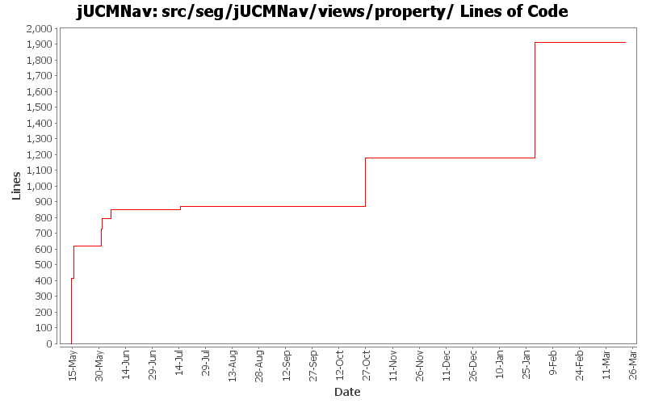

Summary Period: 2005-05-14 to 2006-03-21
[root]/src/seg/jUCMNav/views/property
 descriptors
(6 files, 350 lines)
descriptors
(6 files, 350 lines)

Total Lines Of Code:
1909 (2006-03-31 18:01)
| Author | Changes | Lines of Code | Lines per Change |
|---|---|---|---|
| Totals | 105 (100.0%) | 1909 (100.0%) | 18.1 |
| jfroy | 20 (19.0%) | 1041 (54.5%) | 52.0 |
| etremblay | 20 (19.0%) | 472 (24.7%) | 23.6 |
| jkealey | 57 (54.3%) | 396 (20.7%) | 6.9 |
| jpdaigle | 8 (7.6%) | 0 (0.0%) | 0.0 |
bug 414 component fill color problem on undo
0 lines of code changed in:
Added extension point for the Strategy algorithms
0 lines of code changed in:
Externalize String
0 lines of code changed in:
Name change for EvaluationScenario (now called Strategy)
0 lines of code changed in:
Added actor evaluation level.
Fixed bug when entering non integer for evaluation level
0 lines of code changed in:
Fixed bug with Actor label (changing name when editing label value)
0 lines of code changed in:
Evaluation scenario view added.
0 lines of code changed in:
Merge of GRL branch with the main trunk
733 lines of code changed in:
Merge grl branch with the main trunk
Major modification of the metamodel (URN_08.mdl) (Added GRL metamodel, New interfaces that define common element in GRL and UCM, Modified UCM-Map package to implement the new interfaces (some associations and attributes have been refactored using the interfaces), Map is now called UCMmap (to resolve conflict with java.util.map in the implementation), Removed Path Graph)
Modification of the code that used the metamodel.
Started modification of jUCMNav to support GRL.
308 lines of code changed in:
bugs 372 - 378 - 380 - 379 - 273 - 375 - massive changes in deletion command infrastructure. mainly refactoring but also various functionality additions
also committing minor changes to the twiki plugin created by JFRoy and an ant script to generate javadoc on a windows machine.
0 lines of code changed in:
bug 386 - seems like a regression bug snuck up on us. was adding colors twice in properties.
0 lines of code changed in:
added headers + package.html for all files in the seg.jUCMNav.views.* package. did not clean the files
17 lines of code changed in:
bug 344 - localization wizard
0 lines of code changed in:
JP: javadoc improvements on private-visibility methods
0 lines of code changed in:
little property issues; trying to fix collapsed category bug presented by Gunter. Ends up looking like a framework bug.
0 lines of code changed in:
had forgotten definition instead of Definition
0 lines of code changed in:
various issues brought up by Gunter
0 lines of code changed in:
bug 335: palette wording
bug 344: extracted more strings
0 lines of code changed in:
bug 328 - property dropdowns for component definitions, responsibility definitions and abstract enumerations are now sorted. definitions now use same names as in outline. changes had less impact than anticipated
0 lines of code changed in:
bugs 194, 195: timeout paths and waitingplace/timer conditions. took 10 minutes to implement timeout paths, 5 hours to get the friggen timeout path figure refreshed when moving path nodes that are not directly linked. i have not managed to succeed in replicating the behaviour for stub labels.
0 lines of code changed in:
(26 more)
Generated by StatCVS 0.2.4